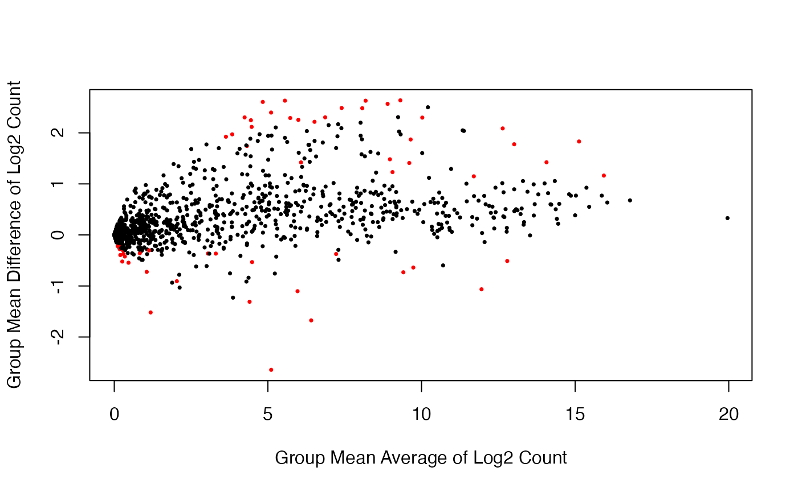

Introduction to PRECISION.SEQ Data
Intro_Data.RmdMicroRNA (miRNA) sequencing data is collected for two subtypes of soft tissue sarcoma: myxofibrosarcoma (MXF) and pleomorphic malignant fibrous histiocytoma (PMFH). 27 MXF samples and 27 PMFH samples, which were newly diagnosed untreated tumors, were collected at Memorial Sloan Kettering Cancer Center between 2002 and 2012. These tumor samples were sequenced twice: once with uniform handling and balanced sample-to-library-assignment to minimize data artifact due to experimental handling and avoid their confounding with sample group (that is, tumor type); and a second time without, which exhibits data artifacts due to handling and requires normalization for removing obscuring variability. We call the former the benchmark data and the latter the test data. They are named as data.benchmark and data.test respectively in this package. We show how to examine the overall distribution and perform differential expression analysis for these data sets as well as how to simulate additional paired data sets by applying a novel data permutation algorithm to the paired data sets.
Benchmark Data Analysis
Overall Data Distribution
We examine the overall distribution of the log2 transformed benchmark data using sample-specific boxplots.
benchmark.log <- log2(data.benchmark + 1)
boxplot(benchmark.log,
col = ifelse(grepl("MXF", colnames(benchmark.log)),
rainbow(2)[1], rainbow(2)[2]),
ylab = "Log2 Count", ylim = c(0, 20),
xaxt = "n", outline = FALSE)
legend("topright",c("MXF", "PMFH"), bty = "n",
pch = "x", cex = 1, col = c(rainbow(2)[1], rainbow(2)[2]))
Differential Expression Analysis
We assess evidence for differential expression in the benchmark data using the voom-limma method for the log2 transformed count data. The analysis results are displayed with the volcano plot and the scatter plot of group mean difference versus group mean average. Red dots indicate the genes which are significantly differentially expressed (\(p < 0.01\)).
benchmark.voom <- DE.voom(RC = data.benchmark, groups = data.group, Pval = 0.01)
DE.bench <- benchmark.voom$id.list
benchmark.voom.dat <- data.frame(dm = benchmark.voom$log2.FC,
p.value = benchmark.voom$p.val)
mask <- with(benchmark.voom.dat, p.value < .01)
cols <- ifelse(mask,"red", "black")
with(benchmark.voom.dat, plot(dm, -log10(p.value), cex = .5, pch = 16,
col = cols, xlim = c(-3.6, 3.6),
ylim = c(0, 6),
xlab = "Mean Difference: PMFH - MXF"))
abline(h = 2, lty = 2)
cols <- ifelse(rownames(benchmark.log) %in% DE.bench, "red", "black")
plot(rowMeans(benchmark.log),
apply(benchmark.log[,grepl("MXF", colnames(benchmark.log))], 1, mean) -
apply(benchmark.log[,grepl("PMFH", colnames(benchmark.log))], 1, mean),
pch = 16, cex = 0.5, col = cols,
xlab = "Group Mean Average of Log2 Count",
ylab = "Group Mean Difference of Log2 Count",
main = "")
Test Data Analysis
Overall Data Distribution
We examine the overall distribution of the log2 transformed test data using sample-specific boxplots.
test.log <- log2(data.test + 1)
boxplot(test.log,
col = ifelse(grepl("MXF", colnames(benchmark.log)),
rainbow(2)[1], rainbow(2)[2]),
xaxt = "n", outline = FALSE, ylim = c(0, 20))
legend("topleft",c("MXF", "PMFH"), bty = "n",
pch = "x", cex = 1, col = c(rainbow(2)[1], rainbow(2)[2]))
Differential Expression Analysis
We assess evidence for differential expression in the test data using the voom-limma method (without any depth normalization). The analysis results are displayed with the volcano plot and the scatter plot of group mean difference versus group mean average. Red dots indicate the genes which are significantly differentially expressed (\(p < 0.01\)).
test.voom <- DE.voom(RC = data.test, groups = data.group, Pval = 0.01)
test.voom.dat <- data.frame(dm = test.voom$log2.FC,
p.value = test.voom$p.val)
mask <- with(test.voom.dat, p.value < .01)
cols <- ifelse(mask,"red", "black")
with(test.voom.dat, plot(dm, -log10(p.value), cex = .5, pch = 16,
ylim = c(0, 6), xlim = c(-3.6, 3.6),
col = cols, xlab = "Mean Difference: PMFH - MXF"))
abline(h = 2, lty = 2)
Comparison of Differential Expression Between Benchmark Data and Test Data
Significance for differential expression is claimed using a p-value cutoff of 0.01 for both the benchmark data and the test data. They are compared with each other using the Venn diagram.
pval.bench.test <- data.frame(cbind(bench.pval = benchmark.voom$p.val,
test.pval = test.voom$p.val[names(benchmark.voom$p.val)]))
attach(pval.bench.test)
bench.sig <- (bench.pval < 0.01)
test.sig <- (test.pval < 0.01)
venn2 <- cbind(bench.sig, test.sig)
vennDiagram(vennCounts(venn2),
names = c("Benchmark", "Test"),
cex = 1.5, counts.col = rainbow(1))
Comparison of Estimated Group Means Between Benchmark Data and Test Data
Scatterplot for the relationship between group means of benchmark and test data for MXF and PMFH.
benchmark.log.MXF.mean <- rowMeans(benchmark.log[, grepl("MXF", colnames(benchmark.log))])
plot(benchmark.log.MXF.mean,
rowMeans(test.log[,grepl("MXF", colnames(test.log))]), pch = 16, cex = 0.5,
xlab = "Group Mean Average of Log2 Count in Benchmark",
ylab = "Group Mean Average of Log2 Count in Test",
main = "MXF", xlim = c(0, 20), ylim = c(0, 20))
abline(0,1)
benchmark.log.PMFH.mean <- rowMeans(benchmark.log[, grepl("PMFH", colnames(benchmark.log))])
plot(benchmark.log.PMFH.mean,
rowMeans(test.log[,grepl("PMFH", colnames(test.log))]), pch = 16, cex = 0.5,
xlab = "Group Mean Average of Log2 Count in Benchmark",
ylab = "Group Mean AVerage of Log2 Count in Test",
main = "PMFH", xlim = c(0, 20), ylim = c(0, 20))
abline(0,1)Simulation
We then describe how to use simulated.data() function to generate additional pairs of data sets by permuting the paired data sets to achieve a pre-specified level of differential expression. As an example, we show how to generate data sets with the proportion of differential expression around 0.02 (more specifically, in the range of 0.0175 and 0.0225) and the median of mean differences (for log2 counts) around 0 (more specifically, in the range of -0.5 and 0.5).
simulated <- simulated.data(proportion = c(0.0175, 0.0225), median = c(-0.5, 0.5), numsets = 100)
head(simulated[[1]]$simulated_benchmark)[,1:5]
#> D8 D17 D9 E4 E5
#> hsa-let-7a-2* 6 4 2 2 11
#> hsa-let-7a(3) 18756 61589 57395 167139 268842
#> hsa-let-7a*(2) 154 436 142 812 1517
#> hsa-let-7b 3001 29023 14939 52727 77765
#> hsa-let-7b* 23 125 74 208 607
#> hsa-let-7c 5961 9774 12911 13533 65477
head(simulated[[1]]$simulated_test)[,1:5]
#> D8 D17 D9 E4 E5
#> hsa-let-7a-2* 0 1 0 0 2
#> hsa-let-7a(3) 62888 53958 127231 143241 253696
#> hsa-let-7a*(2) 593 113 240 1173 1162
#> hsa-let-7b 4863 15832 25940 13098 93419
#> hsa-let-7b* 46 32 59 59 258
#> hsa-let-7c 20689 8156 28152 8428 71733